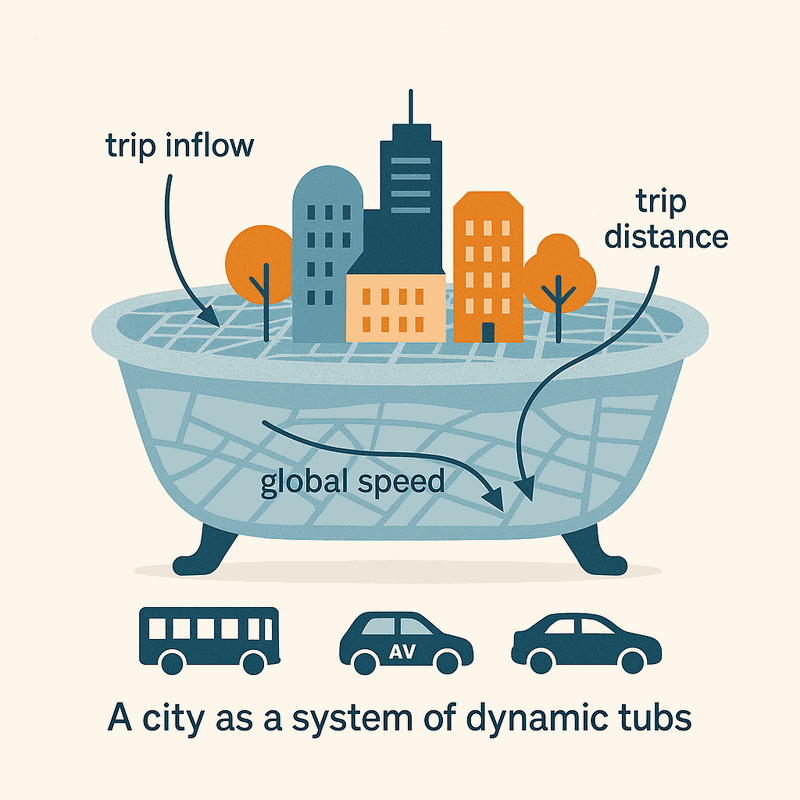

UrbanMOVES
UrbanMOVES will develop advanced transport models to quickly select the most attractive, efficient, and tailored shared mobility systems for each city to reduce delays and pollution in rapidly growing cities. Travellers’ preferences and choices will be integrated into efficient aggregated traffic models that reduce the complexity of traditional models. This is possible by simplifying the road network representation and capturing accurate traffic congestion dynamics. A new tool for quick comparison of mobility systems will enable tailored policy recommendations and new scientific understanding of the role of key city characteristics on optimal shared mobility. UrbanMOVES paves the way for sustainable mobility.

News
- TU Delft news: Five Veni grants for CEG researchers — UrbanMOVES featured
- Kick-off Meeting — February 2026
The relevance of UrbanMOVES
The challenge
Urban population growth is packing more people onto the same streets, just as emissions targets tighten and private cars continue to dominate urban travel. Shared mobility — car-sharing, pooled ride-hailing, and eventually shared automated vehicles — offers a real way out, but only if it is deployed well: without proper evaluation and optimisation before deployment, many pilots underperform or fail outright.
Existing planning and optimisation tools force an uncomfortable trade-off: they either oversimplify reality, or they demand more data and computing power than most cities and operators have on hand. Most are also built around a single shared mobility service for a single city [1], so decisions about which system to deploy are often made on incomplete evidence.
The approach
UrbanMOVES closes this gap by helping cities identify the shared mobility configuration — fleet size, vehicle capacity, operating model — that actually fits their own street network and travel patterns, before any investment is made.
The project builds on bathtub models (also known as MFD-based models [2]): scalable, network-level traffic models that need far less data than traditional simulation, and that can turn out key performance indicators — travel time, emissions, user adoption — in seconds rather than hours.
Why it matters
For municipalities, UrbanMOVES shows which shared mobility systems genuinely fit their urban landscape, supporting sustainable urban planning; the resulting tool can be tuned to local priorities such as travel time, emissions, private car use, or accessibility.
For car-sharing companies, the same insights reduce investment uncertainty and support designing services that integrate well with the transport system already in place in a given city.
[1] Mourad, A., Puchinger, J., & Chu, C. (2019). A survey of models and algorithms for optimizing shared mobility. Transportation Research Part B: Methodological, 123, 323–346.
[2] Johari, M., Keyvan-Ekbatani, M., Leclercq, L., Ngoduy, D., & Mahmassani, H. S. (2021). Macroscopic network-level traffic models: Bridging fifty years of development toward the next era. Transportation Research Part C: Emerging Technologies, 131, 103334. doi.org/10.1016/j.trc.2021.103334
Deliverables
This section is a work in progress and will be updated regularly.